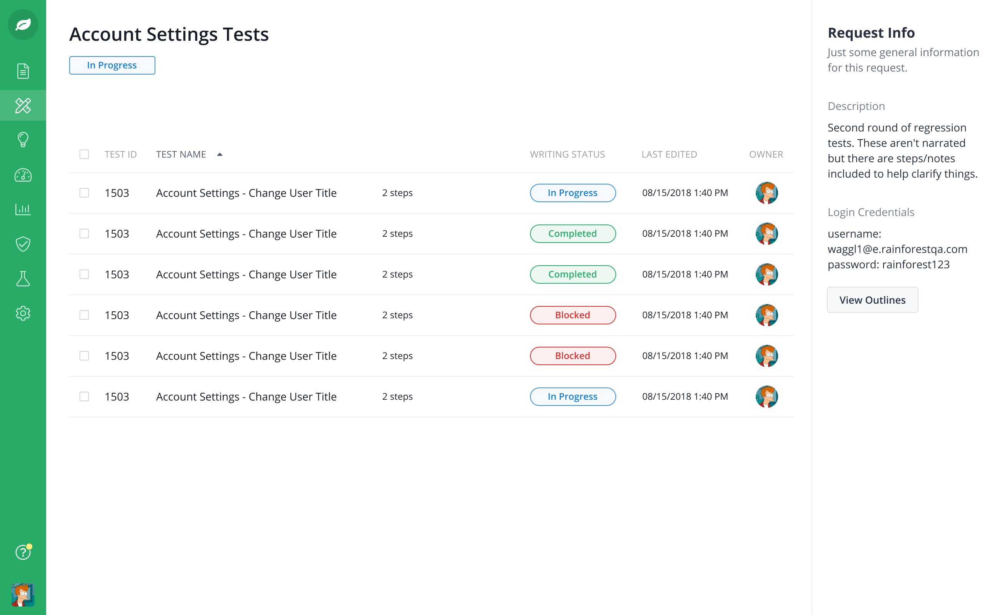
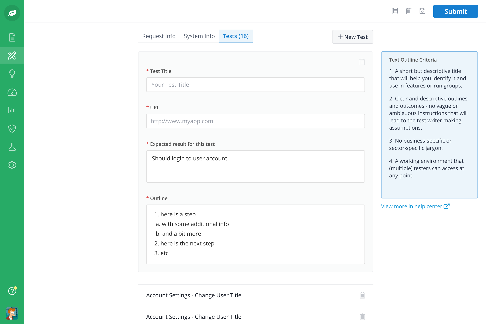
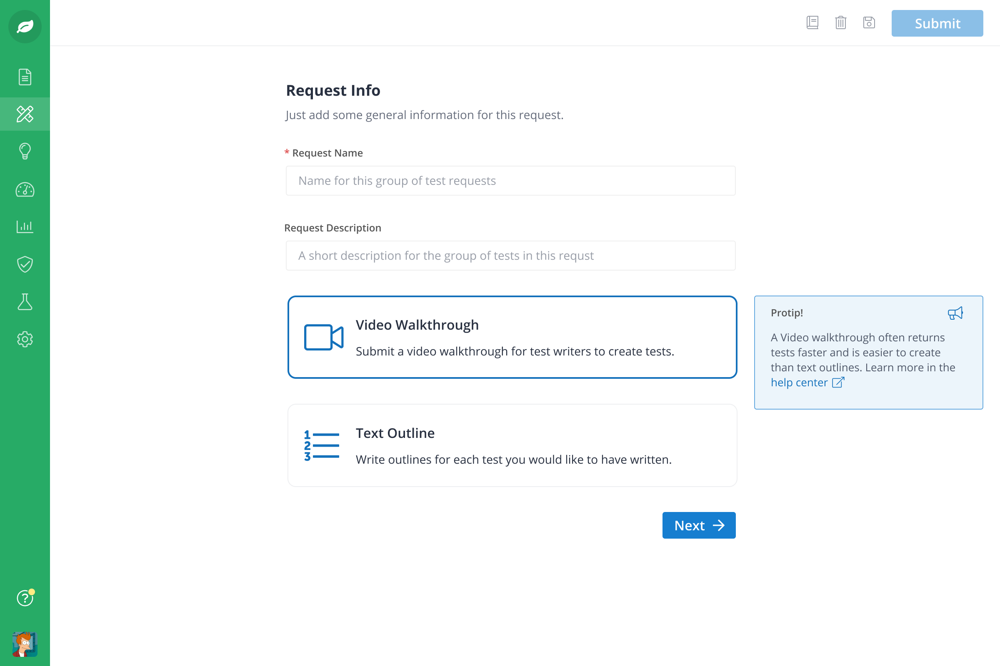
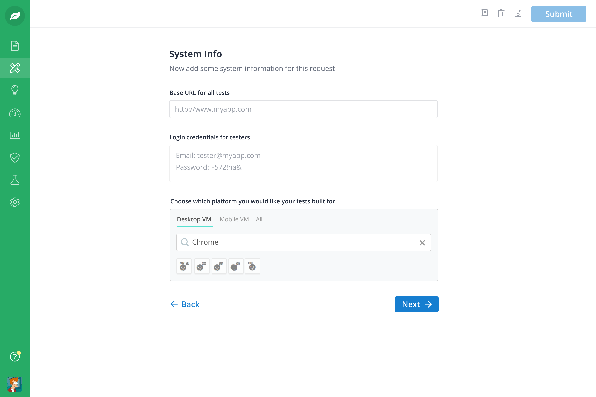
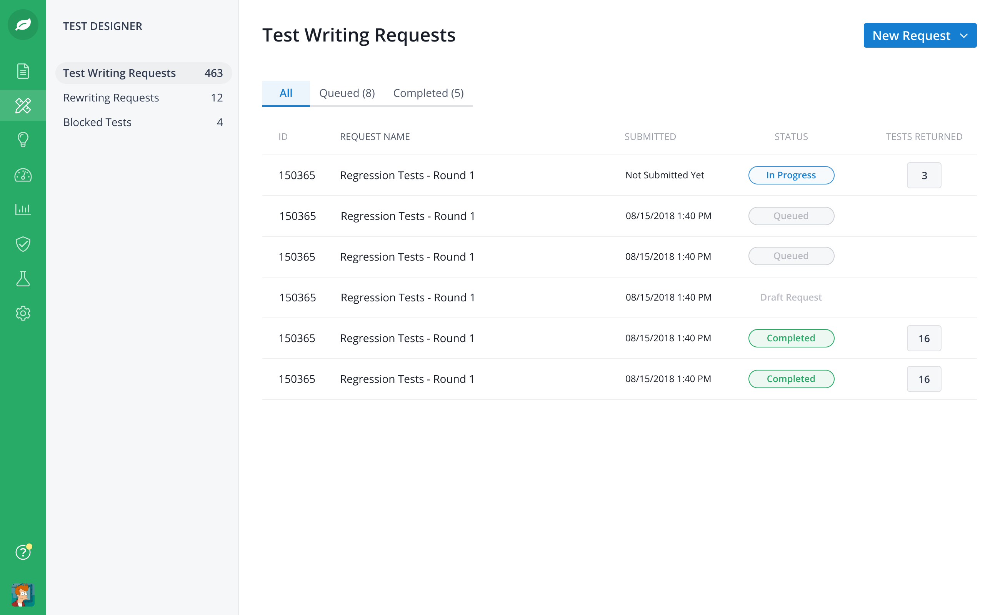
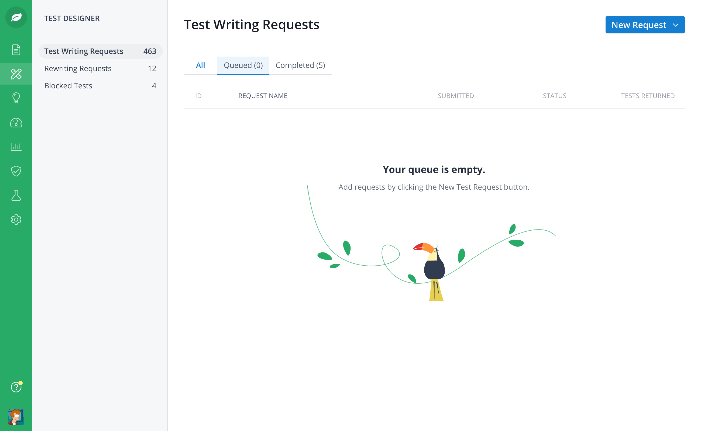

A feature that let teams sketch a rough outline of a regression test and have it turned into a fully automatable test by the Rainforest crowd. We shipped it in deliberate phases, starting simple and adding capability as we learned.

Writing automated regression tests is slow and technical, which keeps a lot of teams from doing it at all. Test Designer set out to remove that barrier: a user could enter a rough outline of what a test should check, and the Rainforest crowd would convert it into a fully automatable test, returning a batch within 48 hours.
The product goals were direct:
The "crawl, walk, run" framing was the delivery strategy. Rather than designing the most ambitious version up front, we shipped a simple, trustworthy first version, watched how people actually used it, and expanded the capability in stages.
I was the product designer on Test Designer. I designed the end-to-end experience for outlining a test, owned the interaction patterns across each phase of the rollout, and iterated on the flow as we learned what made the hand-off to the crowd reliable.





Contact
I'm currently exploring design leadership and senior IC opportunities. If you're building something meaningful and want a design leader who can also build, I'd love to hear from you.